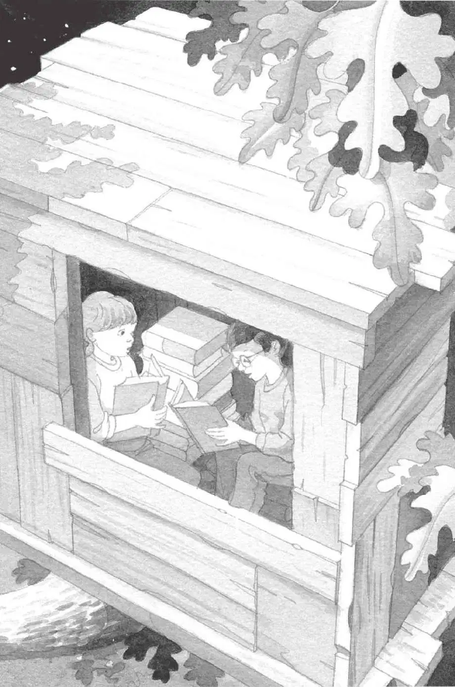

夏季的某一天，在美国宾夕法尼亚州的蛙溪树林里，出现了一个神秘的树屋。
八岁男孩杰克和他七岁的妹妹安妮爬进了树屋，发现里面装满了各种各样的书籍。
很快，杰克和安妮就发现，树屋有种神奇的魔力。只要他们拿起一本书，指着书中的图片说想去那里，树屋就能带着他们穿越时空到达那个地方。
杰克和安妮拜访过恐龙、骑士、金字塔、海盗和忍者，还看过亚马孙热带雨林和剑齿虎。
在这个过程中，他们发现这座树屋的主人是仙女摩根。仙女摩根是亚瑟王时代一位会魔法的图书馆管理员，她正在穿越古今，收集世界各地的书籍。
有一天，杰克和安妮发现了仙女摩根留下的一张字条。字条告诉他们，她中了魔咒，杰克和安妮必须找到四样特殊的东西，才能把她解救出来。
在小老鼠的帮助下，杰克和安妮在古代日本找到了第一样，在亚马孙热带雨林找到了第二样，又在冰川时代找到了第三样。
现在，杰克、安妮和小老鼠准备再次出发，去月球寻找最后一样东西。